About arc42
arc42, the template for documentation of software and system architecture.
Template Version 8.2 EN. (based upon AsciiDoc version), January 2023
Created, maintained and © by Dr. Peter Hruschka, Dr. Gernot Starke and contributors. See https://arc42.org.
1. Introduction and Goals
Software development company Micrati has decided to shift its focus to the development of a video game based on the classical board game Y. The new game will be named YOVI.
YOVI is a two-player strategy game in which each player is assigned a color. The board consists of hexagonal tiles arranged in a triangular shape. Players take turns placing a piece of their assigned color on an empty tile. The objective of the game is to connect the three sides of the triangular board with a continuous path of pieces of the same color.
The main goal of the project is to deliver a deployed, accessible, and scalable web-based system that allows users to play Y against the computer with multiple strategies and configurable difficulty levels, while also exposing a documented API for bot interaction.
1.1. Requirements Overview
The system will be composed of two main subsystems:
-
A Web Application implemented in TypeScript that allows users to:
-
Play games through a graphical interface.
-
Register and manage their accounts.
-
Access statistics and match history.
-
Interact through a public API that enables bot integration.
-
-
A Game Engine module implemented in Rust responsible for:
-
Determining whether a match has been won.
-
Suggesting the next move based on different strategies.
-
Providing a basic web service interface to be invoked by the Web Application.
-
Communication between both subsystems will be performed through JSON messages using the YEN (Y Notation) format to represent game states.
1.1.1. Functional Requirements
The system must fulfill the following functional requirements:
-
The system shall provide a web-based frontend that allows users to play the classical version of the Y game.
-
The system shall allow a human player to play against the computer.
-
The board size shall be configurable.
-
The system shall implement more than one computer strategy. Each strategy may include different difficulty levels, which can be selected by the user.
-
The system shall allow users to register and authenticate.
-
The system shall store and display user statistics, including:
-
Number of games played.
-
Number of games won and lost.
-
Additional performance metrics if necessary.
-
-
The system shall provide a public REST API that allows:
-
Access to user information.
-
Access to match information.
-
Management of matches.
-
Interaction from external bots.
-
-
The API shall include a method
playthat:-
Receives at least a parameter
positionin YEN notation. -
Returns the next move in YEN notation.
-
Optionally allows the selection of strategy and difficulty.
-
-
The system shall be deployed and accessible via the Web.
1.2. Quality Goals
| Priority | Quality Goal | Concrete Description |
|---|---|---|
1 |
Performance |
The system shall return a move suggestion from the Rust engine in less than 1 second for standard board sizes under normal load conditions (up to 50 concurrent users). |
2 |
Scalability |
The system shall support at least 50 concurrent authenticated users playing matches simultaneously without service degradation (response times above 2 seconds or request failures). |
3 |
Availability |
The deployed system shall achieve at least 99% uptime measured on a monthly basis, excluding scheduled maintenance. |
4 |
Modifiability |
It shall be possible to add a new computer strategy without modifying the Web frontend and without changing existing strategy implementations (Open/Closed Principle). Integration of a new strategy should require changes only within the Rust engine module. |
5 |
Usability |
A new user shall be able to register and start a game in less than 5 minutes without external documentation. The interface shall clearly indicate: current turn, selected strategy, board size, and game result. |
6 |
Interoperability |
The public REST API shall follow standard HTTP conventions and JSON format,
and it shall be fully documented (e.g., OpenAPI). External bots shall be able to
interact with the |
1.3. Stakeholders
| Stakeholder | Interest |
|---|---|
Players |
Want to play the game easily, select strategies, and track their statistics. |
Developers |
Need a maintainable and well-documented architecture, witch will ensure easy modifications in the future. |
Project Team |
Needs proper documentation, testing, and a simple architecture for the project, to simplify the development and maintenance. |
Micrati |
Expects a functional, high-quality, and innovative product, which boosts profits for the company. |
Teachers |
Need a good documentation and a functional project to grade students. |
2. Architecture Constraints
2.1. Technical Constraints
| Constraint | Description |
|---|---|
Frontend |
The web application must be built with React, Vite, and TypeScript. |
Game Engine Language |
The core of the game must be implemented in Rust. |
Data Exchange |
Communication between the web application and the Rust module must use JSON messages following the YEN notation. |
Bot Support |
The system must provide an external API for bots to interact with the game. |
Deployment |
The application must be accessible via web browser. |
Git and github |
The project will have a version control through Git. The repository will be public in GitHub. |
Tools for documentation |
The project will use AsciiDoc for text and PlantUML for diagrams. |
2.2. Organizational Constraints
| Constraint | Description |
|---|---|
Team |
The project is developed by a team of four students, as assigned by the course teacher. |
Deadline |
The project must be delivered on the established deadlines. |
Issues |
The GitHub Issues tab will be used for management tasks. |
Meetings |
During weekly labs, the team will hold progress reviews to evaluate the previous tasks completion and define the next ones. |
Pull requests |
We use Pull Request workflow for all changes. This ensures the code is reviewed by another team member, helping us to maintain consistency and fix issues before merging. |
2.3. Conventions
| Constraint | Description |
|---|---|
Documentation Standard |
Documentation must follow the Arc42 template. |
Language |
The documentation and the final application will be developed in English. |
Usability |
The interface should be easy to use and accessible, making sure everyone has a smooth experience while playing. |
Coding |
We focus on code quality by using meaningful names, modular components, and clear documentation. |
3. Context and Scope
This section describes the system as a black box, showing its interactions with external actors and systems. It also presents the technical interfaces used between the main subsystems.
3.1. Business Context
YOVI is a software platform designed to allow users to play the game Y through a web application, while also enabling automated interaction through an external API consumed by bots. The system provides gameplay functionality, user management, statistics tracking, and game validation through a dedicated game engine.
From a business perspective, the system offers:
-
A web interface for playing the classic version of the game Y.
-
User registration and management.
-
Game history and statistics visualization.
-
An external API for automated clients (bots).
-
Game validation and move suggestion functionalities.
3.1.1. External Actors
| Actor / External System | Interaction with YOVI |
|---|---|
Web User |
Plays matches, selects strategies, and consults statistics. |
External Bot |
Uses the public API to play games automatically. |
Game Engine |
Checks win conditions and suggests next moves. |
Web Deployment Platform |
Provides public access to the system. |
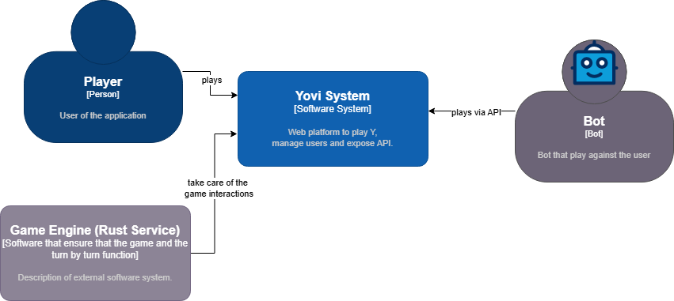
3.2. Technical Context
At a technical level, YOVI is composed of several subsystems that communicate using web protocols and JSON messages, including the YEN notation for representing game states.
3.2.1. Main Technical Containers
Web Application (TypeScript)
Responsibilities:
-
User interface.
-
User interaction and gameplay visualization.
-
Access to backend services.
Backend API
Responsibilities:
-
Application orchestration.
-
User and game management.
-
Exposure of the external API for bots.
-
Communication with the game engine.
Game Engine (Rust)
Responsibilities:
-
Game state validation.
-
Win detection.
-
Move suggestion according to selected strategies.
Database (if present in the final architecture)
Responsibilities:
-
Persistent storage of users.
-
Game history.
-
Statistics.
3.2.2. Technical Interfaces
| From | To | Channel | Data Format |
|---|---|---|---|
Browser |
Frontend Web App |
HTTPS |
HTML/CSS/JavaScript |
Frontend |
Backend API |
REST |
JSON |
External Bots |
Backend API |
REST |
JSON |
Backend API |
Game Engine (Rust) |
HTTP REST |
JSON (YEN) |
Backend API |
Database |
Database Driver |
SQL |
3.2.3. Technical Context Diagram
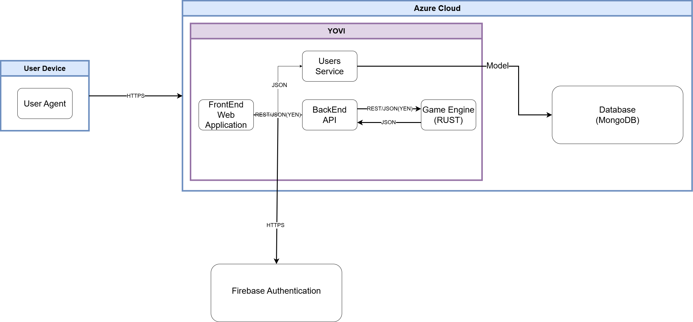
3.3. Scope
YOVI is responsible for:
-
Managing user accounts and authentication.
-
Handling game sessions and history.
-
Validating game states.
-
Detecting win conditions.
-
Providing move suggestions for players.
-
Exposing a public API for automated bots.
YOVI is not responsible for:
-
Payment processing or external financial transactions.
-
Cross-game matchmaking platforms.
-
Third-party authentication providers (OAuth, SSO).
-
External infrastructure management (servers, cloud services).
3.4. Mapping Input / Output
3.4.1. Inputs
-
User interactions through the web interface.
-
API requests from external bots.
-
Board states encoded using YEN notation.
3.4.2. Outputs
-
Updated game state.
-
Match results (win / ongoing).
-
User statistics.
-
Suggested moves returned by the game engine.
3.5. Use Cases
The users can use the application only once the have created an account using a username, email and password. Once in the app they can play the YGame, see their match history and edit their profile.
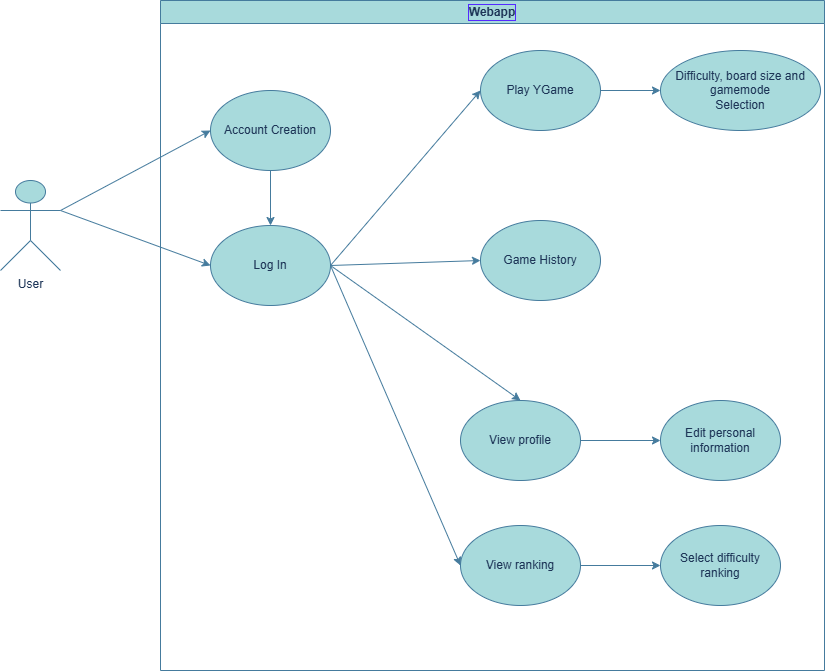
4. Solution Strategy
4.1. Technologies used
4.1.1. Frontend
We use React with TypeScript for the web UI of the Game Y app. This framework for JavaScript is very popular and highly used in the software market. It was also the framework provided with the app demo by the teachers. TypeScript adds static typing on top of JavaScript, which helps catch errors at compile time and improves code maintainability. Finally, we use Vite, a modern build tool that provides fast hot module replacement (HMR) during development and optimized production builds.
4.1.2. Backend
The backend is implemented in Rust, a systems programming language focused on performance and memory safety. The language has a growing community and huge support by enterprises. Linux Kernel is being partially upgraded with modules in Rust, combining with classic C modules.
4.1.3. Supporting services
Auxiliary services are built with Node.js and Express, handling cross-cutting concerns such as user authentication and profile management that are kept separate from the core game logic in Rust. Express provides a minimal and flexible routing layer that makes these REST endpoints straightforward to maintain and extend independently of the main backend.
For data persistence, two complementary solutions are used. MongoDB stores structured application data such as user profiles and match history, offering a flexible document model that adapts well to evolving data requirements. Firebase covers real-time needs and authentication: its Authentication service manages identity providers and session tokens, while its real-time capabilities are leveraged where low-latency data synchronization between clients is needed.
To handle deployment setup and enable an easy share of the app, we use Docker. Each component of the game is stored in a docker container that interacts with the other ones.
Server wise, we use Azure to deploy the app in a virtual machine accessible by a public url
4.1.4. Version control
Git is used for source control, with GitHub as the remote repository and collaboration platform. GitHub also hosts the project’s issue tracker and pull request workflow, supporting code review and continuous integration. Summaries of the weekly meetings between development team are posted in GitHub wiki.
4.1.5. Documentation
Architecture and technical documentation is written in AsciiDoc, a lightweight markup language well suited for structured, version-controlled documentation. Diagrams are authored with PlantUML, which allows architecture and sequence diagrams to be described as plain text and rendered automatically, keeping them in sync with the rest of the documentation inside the repository. Arc 42 template is used to enhance documentation structure and cohesion.
4.1.6. Communication
The language used for all project communication — including documentation, commit messages, pull request descriptions, and code comments — is English.
5. Building Block View
5.1. Whitebox Overall System
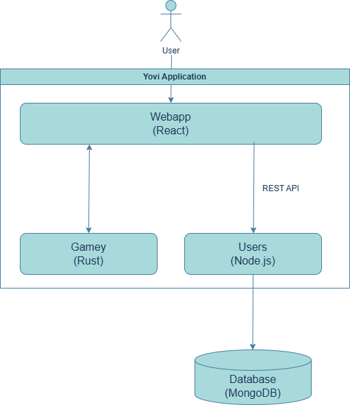
Motivation
The system is divided into a React-based web application and a Rust-based game engine to clearly separate user interface concerns from core game logic.
The Web App is responsible for rendering the UI and managing user interactions, while persistence is handled via the backend service.
The Game Engine encapsulates the game rules and bot logic, allowing for high performance and reusability.
This separation improves maintainability, scalability, and enables independent development of UI and game logic.
- Contained Building Blocks
| Name | Responsibility |
|---|---|
Web App (React / Vite / TypeScript) |
Provides the user interface, handles user interactions, and communicates with the backend service via REST APIs. |
Users Service (Node.js / Express) |
Acts as the backend API, managing user data, authentication, and coordinating communication between the frontend, database, and game engine. |
Game Engine (Rust) |
Implements core game logic, rules, and bot behavior, processing game-related computations. |
Database |
Stores persistent data such as user accounts, game state, and scores. |
5.1.1. Webapp
Purpose/Responsibility
Provides the user interface of the system. It handles user interactions, renders the game board, and communicates with the backend service to retrieve and update data.
Interface(s)
REST API calls to the Users Service:
POST /login – user authentication
GET /user – retrieve user data
POST /ybot/choose – send player actions and return the bots´ moves
Receives JSON responses containing user and game state data and sends YEN.
Quality/Performance Characteristics
Responsive UI with low latency interaction
Cross-browser compatibility
Fast rendering using modern frontend tooling (Vite)
Directory/File Location: /webapp
Fulfilled Requirements
User interaction and gameplay visualization
Display of game state and results
Open Issues/Problems/Risks
Performance limitations for complex UI updates
Dependency on backend availability
5.1.2. Users Service (Node.js / Express)
Purpose/Responsibility
Acts as the central backend service. It manages user-related functionality, handles authentication, and coordinates communication between the frontend, database, and game engine.
Interface(s)
REST API exposed to Web App:
Authentication endpoints (/login, /register)
Internal communication:
Database queries (CRUD operations)
Quality/Performance Characteristics
Stateless service for scalability
Handles concurrent requests efficiently
Directory/File Location: /users
Fulfilled Requirements
User management and authentication
Open Issues/Problems/Risks
Single point of failure if not replicated
Performance bottleneck under high load
5.1.3. Game Engine (Rust)
Purpose/Responsibility
Implements the core game logic, including rules, state transitions, and bot behavior. It processes game actions and computes the resulting game state.
Interface(s)
Receives requests from Webapp:
Input: current game state + player move
Output: updated game state and bot actions
Quality/Performance Characteristics
High performance and low-level efficiency
Deterministic and reliable computation
Suitable for complex game logic and AI
Directory/File Location: /gamey
Fulfilled Requirements
Game rules enforcement
Bot/AI decision making
Game state updates
Open Issues/Problems/Risks
Integration complexity with Node.js service
Debugging can be harder across language boundaries
5.1.4. Database
Purpose/Responsibility
Provides persistent storage for the system, including user data, game states, and scores.
Interface(s)
Accessed by Users Service via database queries (e.g., SQL or NoSQL queries)
Supports CRUD operations:
Create/update user data
Store and retrieve game state
Quality/Performance Characteristics
Data consistency and reliability
Scalable depending on chosen database system
Performance depends on query optimization
Directory/File Location External system (not part of source directories)
Fulfilled Requirements
Persistent storage of users and game data
Retrieval of historical and current game information
Open Issues/Problems/Risks
Potential performance bottlenecks with large datasets
Requires backup and data integrity strategies
5.2. Level 2
5.2.1. White Box Web App – Game Board Component
Diagram
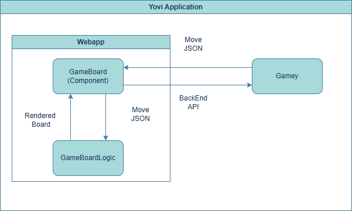
Purpose/Responsibility
Renders the visual game board, updates state based on player actions, and communicates moves to the Users Service.
Interface(s)
Receives game state from Gamey (JSON)
Sends player moves back via Backend API
Quality/Performance Characteristics
Responsive UI
Low latency updates
Reactive updates via React state management
Directory/File Location: webapp/src/components/GameBoard.tsx
Fulfilled Requirements
Visual display of the game board
Handles player interactions
Open Issues/Problems/Risks
Complex rendering for larger boards may affect performance
5.2.2. White Box Gamey – Bots
Diagram
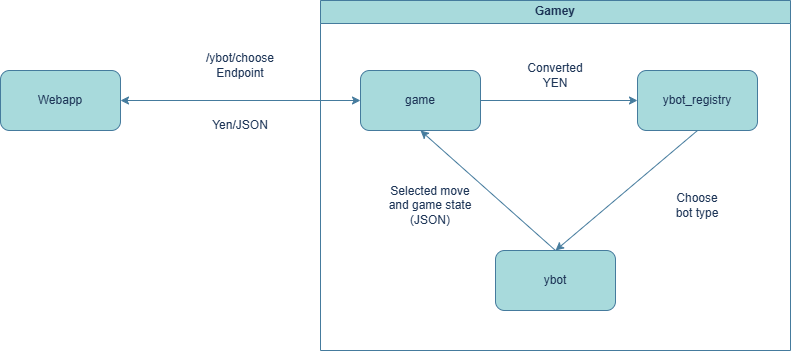
Purpose/Responsibility
Implements AI decision-making for the game, generating moves based on the current game state.
Interface(s)
Input: current game state
Output: selected move
Exposed via the Backend API
Quality/Performance Characteristics
Efficient computation for AI moves
Deterministic behavior for testing
Directory/File Location: gamey/src/bot/
Fulfilled Requirements
Automates bot moves in the game
Ensures challenge for players
Open Issues/Problems/Risks
Scaling to multiple bots simultaneously may increase processing time
5.3. Level 3
Not needed for this version yet.
6. Runtime View
6.1. Single Player Game Initialization

Description
-
The user opens the Web App and chooses to join a game.
-
The Web App prompts the user to select a difficulty level.
-
The user selects the desired difficulty.
-
The Web App sends a request to Gamey to start a new game, including player info and difficulty.
-
The Game Engine initializes bot players according to the chosen difficulty.
-
Bots report readiness to the Game Engine.
-
Gamey sends the initial game state and board to the Web App.
-
The Web App renders the initial board for the user.
6.2. Player Move and Bot Response
.png)
Description
-
The user performs a move in the Web App.
-
The Web App sends the game state directly to the Game Engine (Gamey).
-
The Game Engine selects the appropriate bot.
-
The bot computes the next move.
-
The result is returned directly back to the Web App.
-
The UI updates with the new game state.
6.3. View Match History
.png)
Description
-
After logging in, the user accesses the history section from the navigation bar.
-
The WebApp requests the user’s match history from the users module.
-
Game.js retrieves all past matches associated with the user.
-
The data is returned to the WebApp in JSON format.
-
The interface displays the list of previously played matches of the player.
7. Deployment View
7.1. Infrastructure Level 1
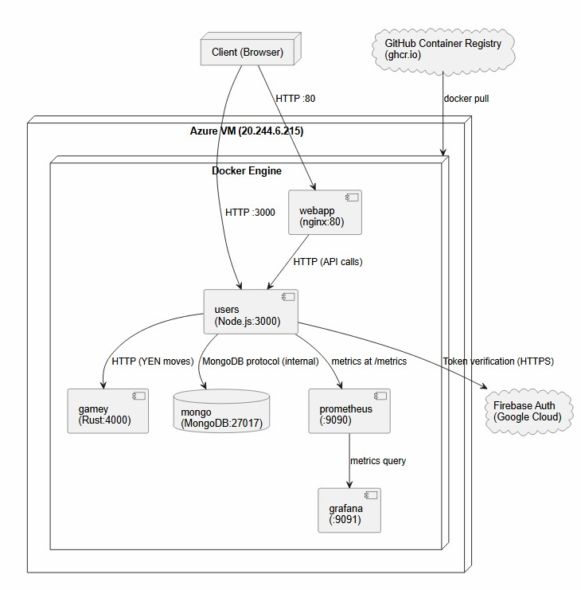
- Motivation
-
The system is deployed on a single Azure virtual machine, using Docker Compose to orchestrate all six services. This decision simplifies deployment and management for a small team while maintaining service isolation through containers. MongoDB runs as a container with a persistent volume so game and user data survives container restarts. Authentication is delegated to Firebase (Google Cloud) to avoid managing credentials manually. Monitoring is handled by a Prometheus + Grafana stack deployed alongside the application services.
- Quality and/or Performance Features
-
-
Availability: The Azure server runs 24/7. Docker Compose restarts containers automatically on failure. MongoDB data is persisted in a named Docker volume (
mongo_data), so data is not lost on redeployment. -
Observability: The
usersservice exposes Prometheus-format metrics viaexpress-prom-bundleat/metrics. Prometheus scrapes these metrics and Grafana provides dashboards for visualization, provisioned automatically via configuration files. -
Security: Communication between the browser and the backend uses JWT tokens signed by Firebase. Sensitive variables (Firebase keys, MongoDB URL) are managed as GitHub Actions secrets and injected at deploy time via
appleboy/ssh-action. Themongocontainer is not exposed externally — only accessible within themonitor-netinternal network. -
Scalability: The microservices architecture allows each service to be scaled independently if needed in the future.
-
- Mapping of Building Blocks to Infrastructure
| Software Component | Docker Container | Exposed Port |
|---|---|---|
React Frontend (Vite + Nginx) |
|
80 |
Users and Games API (Node.js + Express) |
|
3000 |
Game Engine and Bots (Rust + Axum) |
|
4000 |
Database (MongoDB 7) |
|
internal only |
Metrics collection |
|
9090 |
Metrics visualization |
|
9091 |
7.2. Infrastructure Level 2
7.2.1. Azure Virtual Machine
The VM runs Ubuntu 24.04 LTS. Docker Engine and Docker Compose are installed directly on the machine. SSH access for deployments is restricted via public/private key pair, with the private key stored as a GitHub Actions secret (DEPLOY_KEY). All containers share the internal monitor-net bridge network, which allows inter-service communication by container name (e.g. users connects to MongoDB as mongodb://mongo:27017/yovi and reaches the game engine at http://gamey:4000). The mongo container is the only service not exposed externally. A named volume mongo_data persists database contents across deployments.
7.2.2. CI/CD Pipeline (GitHub Actions)
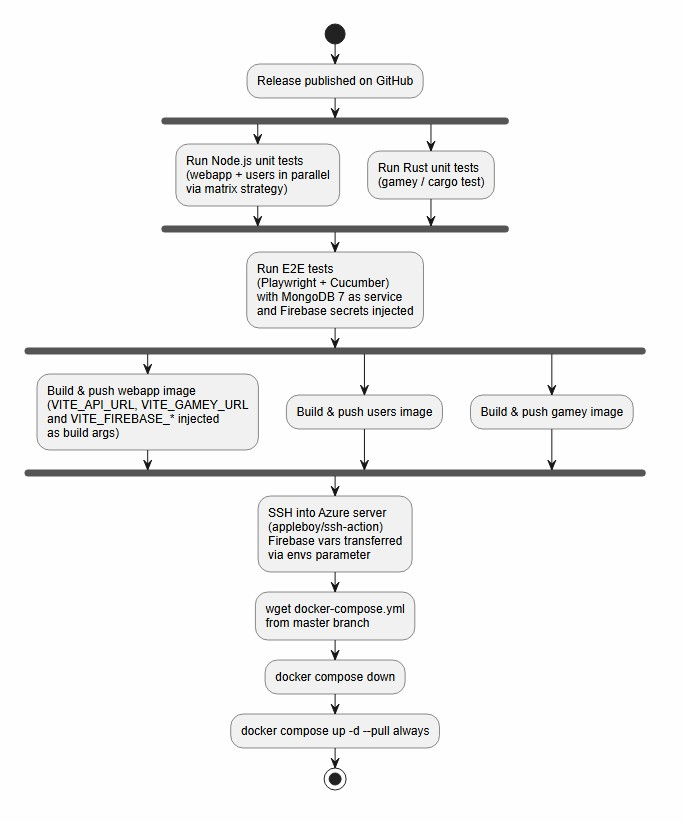
The pipeline is triggered when a release is published on GitHub. Unit tests for Node.js services (webapp and users) run in parallel via a matrix strategy, and Rust tests run concurrently. E2E tests run after all unit tests pass, with a real MongoDB 7 instance spun up as a GitHub Actions service and Firebase credentials injected as environment variables. Docker images are built and pushed to GitHub Container Registry (ghcr.io/arquisoft/yovi_es3b-*). The three Docker images are built in parallel after E2E tests pass. Finally, the server fetches the latest docker-compose.yml from the master branch and pulls the new images.
The webapp image is built with all VITE_* variables injected as build arguments (API URL, Gamey URL, and Firebase configuration), since Vite embeds environment variables at build time and they cannot be changed at runtime.
Firebase Admin credentials (FIREBASE_PROJECT_ID, FIREBASE_CLIENT_EMAIL, FIREBASE_PRIVATE_KEY) are transferred to the remote server via the envs parameter of appleboy/ssh-action so the users container can verify Firebase tokens at runtime.
7.2.3. Monitoring Stack
Prometheus is configured via users/monitoring/prometheus/ and scrapes metrics from the users service at /metrics. Grafana reads from Prometheus and is provisioned automatically via users/monitoring/grafana/provisioning/. Both services are part of the monitor-net network. Grafana is accessible on port 9091 of the Azure VM (internally mapped from Grafana’s default port 3000).
8. Cross-cutting Concepts
8.1. Domain Concepts
The system’s domain revolves around the board game Y, encompassing gameplay mechanics, user interactions, and data persistence. Core concepts include the game board, represented as a graph structure, and moves, which describe the placement of a piece by either a player or the AI. The win condition is defined as connecting all three sides with the player’s moves, and difficulty levels dictate the complexity of AI behavior.
The domain model includes users identified by their Firebase UID, game sessions which store information such as ID, state, difficulty, and result, individual moves that record position, player, and coordinates, and game history, which keeps a list of sessions per user along with relevant details.
Key domain processes involve starting a game session with a chosen AI difficulty, executing player moves on the board, allowing the bot to respond with its own moves, checking for a win condition after each move, and storing the results in the user’s game history. The authenticated flow begins with the user logging into the application, playing a complete game, saving the results at the end, and retrieving their history to review previously played sessions.
8.2. Safety & Security
Security is a primary cross-cutting concern and is largely handled via Firebase, complemented by backend enforcement. Authentication is managed through Firebase Authentication using JWTs, supporting email and password and allowing for future extension to OAuth providers. Backend authorization validates Firebase ID tokens on every protected request, ensuring that only authenticated users can interact with the system, and no passwords are stored on the backend.
Validation and integrity are enforced in the backend by checking game moves to prevent illegal actions, verifying request payloads, and ensuring that no tampering occurs that could compromise the state of the system.
8.3. Architecture & Design Patterns
The system follows a client-server architecture with a stateless backend implemented in Rust. Several design patterns are applied to enhance modularity and maintainability, including a layered architecture, the strategy pattern to manage AI difficulty levels, a middleware pattern for JWT authentication, and a component-based architecture in React for the frontend.
React handles the UI and user interaction, Rust implements the game logic, Node.js manages user data persistence, and Firebase provides authentication services. This division ensures that each layer focuses on its responsibilities while maintaining clean interfaces between them.
8.4. Under-the-hood (Technical Concepts)
The database stores game history and user references based on Firebase UID. The system communicates through a REST API using JSON over HTTP, and all authenticated requests include a Firebase ID token. Business rules are enforced in the backend, ensuring that only legal moves are allowed, the correct turn order is maintained, and win condition logic is accurately evaluated. Rust allows efficient handling of multiple concurrent game sessions and provides performance benefits through lightweight state management and optimized AI computations for each difficulty level.
8.5. User Interface & Experience
The UI is built with React using modular components for the game board, history, and authentication. Users experience instant feedback on moves, clear win and loss states, and smooth transitions between screens. Ergonomics are prioritized with simple game controls and minimal interactions required to start playing. Global state management includes maintaining the authentication session through Firebase, allowing consistent user experience across components.
8.6. Development Concepts
The system’s build and configuration processes are streamlined with React’s build pipeline and Rust builds managed via Cargo. Testing is performed at multiple levels, including unit tests for game logic and UI components, as well as integration tests for API endpoints and authentication. The modular design of both frontend and backend allows the addition of new game modes or features without impacting existing functionality.
8.7. Operation & Administration
The frontend is deployed as a static hosting application on Azure, providing fast load times and easy scalability. The backend runs as a cloud service on an Azure VM, optionally containerized using Docker for portability. Backend logs track requests and errors, while Firebase provides authentication monitoring. API requests and errors are traced to facilitate debugging and operational insight.
The stateless backend architecture allows horizontal scaling, and Firebase automatically handles authentication scaling. Frontend and backend components can scale independently, optimizing resource usage and ensuring resilience to partial failures, such as when authentication services experience issues but gameplay continues uninterrupted. Key design decisions highlight the rationale behind technology choices: Firebase simplifies authentication management, Rust ensures high-performance and memory-safe game logic, React enables interactive and reusable UI components, and the stateless backend promotes scalability, simplicity, and overall system resilience.
9. Architecture Decisions
This section documents the important, high-impact architectural decisions that influence the design and development of Yovi_es3b. The decisions are documented using the ADR format, organized by importance and consequences. Each decision includes the status, context, alternatives, justification, and consequences.
9.1. ADR 1: Rust for the Gamey Engine
Status |
Accepted |
Context |
The gamey engine requires high-performance game logic and bot calculations. The system needs memory safety guarantees without sacrificing performance. |
Alternatives |
Java, Python, C/C++ |
Justification |
Performance: Rust delivers compiled performance comparable to C/C++ without runtime overhead. Memory Safety: Rust’s ownership system guarantees memory safety at compile time, eliminating entire classes of bugs (null pointer dereferences, buffer overflows). Concurrency: Rust’s type system ensures thread safety without needing a garbage collector, ideal for game loop processing. |
Consequences |
- High learning curve for developers unfamiliar with Rust’s. - A little longer compile times compared to interpreted languages. |
9.2. ADR 2: Node.js & Express for the Users Service
Status |
Accepted |
Context |
The users service handles I/O-intensive operations including REST API endpoints, database queries, and user management. |
Alternatives |
Java/Spring Boot |
Justification |
Non-blocking I/O: Node.js is very good at handling concurrent I/O operations with minimal overhead, ideal for managing multiple database queries and API requests. JavaScript Ecosystem: Rich ecosystem of libraries for REST API development, database drivers, and middleware. Development Speed: Rapid prototyping and iteration due to dynamic typing and extensive npm package availability. Operational Consistency: TypeScript is used for type safety, bringing consistency with the webapp frontend. |
Consequences |
- Less suitable for CPU-intensive operations. - Memory consumption can be higher than compiled languages for equivalent workloads. |
9.3. ADR 3: React & TypeScript for the Webapp Frontend
Status |
Accepted |
Context |
The webapp requires a dynamic, interactive user interface with component reusability and type safety. The frontend must communicate without any problems with backend services. |
Alternatives |
Angular, Svelte |
Justification |
Component-Based Architecture: React enables building modular, reusable UI components that simplify maintenance and testing. Type Safety: TypeScript reduces runtime errors and improves IDE support, enhancing developer productivity. Ecosystem & Tooling: very good ecosystem with extensive third-party libraries and a strong community support. |
Consequences |
- Adds build complexity compared to normal JavaScript. - Requires discipline in state management as the application scales. |
9.4. ADR 4: Vite as the Frontend Build Tool
Status |
Accepted |
Context |
The React webapp requires a modern build tool that provides fast development experience and optimized production builds. |
Alternatives |
Webpack |
Justification |
Production Optimization: Automatic code splitting and tree-shaking produce optimized bundles. Configuration Simplicity: Minimal configuration required, while remaining extensible for advanced use cases. Modern Tooling: use modern build techniques without the legacy constraints of older tools. |
Consequences |
- Smaller ecosystem compared to Webpack, we think is sufficient for the project’s scale. - Requires Node.js version compatibility. |
9.5. ADR 5: MongoDB with Mongoose for Persistence
Status |
Accepted |
Context |
To develop the project, a database was required to store users' data and game state. The database needed to store user profiles and authentication data and persist game state information between sessions. |
Alternatives |
Firebase, SQLite |
Justification |
Integration with Node.js: MongoDB works naturally with JSON-like documents Flexible schema design: The project may evolve during development, and MongoDB allows schema changes without complex migrations. Document-oriented model: User data and game state can be stored as structured documents, which simplifying development. Docker-friendly deployment: MongoDB has official Docker images, which simplifies integration into the existing docker-compose setup. |
Consequences |
- Faster development due to schema flexibility - Reduced complexity when mapping backend objects to database documents - Easy integration with the existing JavaScript stack - Simple local and production deployment using Docker - Good scalability options if the application grows - Lack of strict relational constraints - More responsibility at the application level to enforce relationships - Complex relational queries would be harder to implement compared to relational databases. - Transactions are supported, but a relational database would be be more mature in highly complex transactional scenarios |
9.6. ADR 6: Docker & Docker Compose for Orchestration
Status |
Accepted |
Context |
Yovi_es3b consists of multiple independent services (webapp, users, gamey, MongoDB) requiring consistent deployment across development, testing, and production environments. |
Alternatives |
Kubernetes, Platform-as-a-Service (PaaS) |
Justification |
Reproducibility: Docker ensures identical environments across developer machines and production servers.
Ease of Use: Docker Compose provides simple, declarative orchestration for the project’s current scale without Kubernetes complexity.
Isolation: Each service runs in its own container with isolated dependencies, preventing version conflicts.
Rapid Onboarding: New developers can run |
Consequences |
- Docker Compose is not suitable for production a large scale project. - Requires Docker to be installed on all development machines. |
9.7. ADR 7: GitHub Actions
Status |
Accepted |
Context |
Yovi_es3b requires automated testing, code quality checks, and build validation on every code push to maintain code integrity and catch issues early. |
Alternatives |
Jenkins |
Justification |
Native Integration: Seamless integration with GitHub repositories without external infrastructure. Simplicity: Declarative YAML-based workflow configuration is intuitive and maintainable. |
Consequences |
- Limited flexibility compared to self-hosted CI solutions for complex multi-platform builds. - Secrets management through GitHub requires careful configuration. |
9.8. ADR 8: Code Quality Monitoring (SonarCloud & CodeScene)
Status |
Accepted |
Context |
Maintaining code quality and reach 80% test coverage is important in our project. |
Alternatives |
Manual code reviews, SonarQube |
Justification |
Comprehensive Analysis: SonarCloud detects bugs and security vulnerabilities across multiple languages. Coverage Tracking: Provides clear visibility into test coverage trends over time. GitHub Integration: Both tools integrate directly with pull requests, providing instant feedback to developers. |
Consequences |
- Introduces tooling dependencies and potential false positives in static analysis. - Increased CI/CD pipeline execution time due to analysis steps. |
10. Quality Requirements
10.1. Quality Tree
10.2. Quality Scenarios
Source |
Player |
Stimulus |
Starts a game with a non-default board size |
Environment |
Any modern browser, any screen resolution |
Response |
The board and all UI elements render correctly without overflow or distortion |
Measure |
No layout breakage for any supported board size |
Source |
First-time user |
Stimulus |
Visits the app for the first time |
Environment |
Normal runtime conditions |
Response |
The user can register, configure and start a game |
Measure |
The entire flow takes under 2 minutes |
Source |
Logged-in player |
Stimulus |
Wants to check their past matches |
Environment |
Normal runtime conditions |
Response |
The history screen is displayed |
Measure |
Reachable in at most 3 clicks from any screen |
Source |
System / Network |
Stimulus |
Connection drops while a match is finishing |
Environment |
Unstable network conditions |
Response |
Match result is persisted once connection is restored |
Measure |
No match data is lost due to temporary disconnection |
Source |
Registered player |
Stimulus |
Attempts to log in |
Environment |
Normal and peak load conditions |
Response |
Login succeeds with correct credentials |
Measure |
System available for login 99.9% of the time |
Source |
Game engine |
Stimulus |
It is the bot’s turn |
Environment |
Any board size, any difficulty, any game state |
Response |
The bot selects and plays a legal move |
Measure |
Zero illegal moves produced across all difficulty levels |
Source |
Player |
Stimulus |
Starts or joins a game |
Environment |
Normal load, any supported board size |
Response |
The board is fully rendered and interactive |
Measure |
Render time under 1 second |
Source |
Game engine |
Stimulus |
Player completes their turn |
Environment |
Any difficulty level |
Response |
The bot calculates and plays its move |
Measure |
Response time under 2 seconds |
Source |
Logged-in player |
Stimulus |
Opens their match history |
Environment |
Any number of past matches stored |
Response |
History list is displayed |
Measure |
Load time under 3 seconds |
Source |
New or existing user |
Stimulus |
Registers or changes their password |
Environment |
Normal runtime conditions |
Response |
Password is hashed before storage |
Measure |
No plain-text passwords stored (e.g. bcrypt with salt) |
Source |
Logged-in player |
Stimulus |
Requests match history |
Environment |
Multi-user environment |
Response |
Only that user’s own matches are returned |
Measure |
No match data from other users is ever exposed |
Source |
System |
Stimulus |
User is inactive for a configured period |
Environment |
Any logged-in session |
Response |
Session is invalidated and user must log in again |
Measure |
Session expires within the configured timeout window |
Source |
Developer |
Stimulus |
Adds a new bot difficulty level |
Environment |
Development environment |
Response |
New bot is integrated without modifying other modules |
Measure |
Zero changes required outside the bot module |
Source |
Developer / Operator |
Stimulus |
Changes the supported board size range |
Environment |
Development or configuration environment |
Response |
New size is supported across the application |
Measure |
No code changes required, only configuration |
Source |
Developer |
Stimulus |
Reviews or extends the codebase |
Environment |
Development environment |
Response |
Code structure follows the defined layers consistently |
Measure |
No cross-layer violations found in architecture review |
Source |
Player |
Stimulus |
Opens the app in a modern browser |
Environment |
Chrome, Firefox, Edge, Safari (latest versions) |
Response |
App loads and functions correctly |
Measure |
All core features work without any installation |
Source |
Operator |
Stimulus |
Deploys the backend to a cloud provider |
Environment |
Any standard cloud platform (AWS, GCP, Azure, etc.) |
Response |
Backend starts and operates correctly |
Measure |
No provider-specific dependencies required |
11. Risks and Technical Debts
This section serves as a list of identified technical risks and technical debts, ordered by priority with associated mitigation measures.
11.1. Identified Risks
| ID | Risk | Description | Impact | Probability | Mitigation Measures |
|---|---|---|---|---|---|
R1 |
Learning Rust |
Rust is a language with complex syntax and strict memory management requirements. Developing without prior experience can cause significant delays in early sprints and bad code quality. |
Medium |
High |
See tutorials. Use LLms to explain code. Implement algorithms with progressive difficulty levels. |
R2 |
Complexity of used technologies (Rust + TypeScript + JavaScript) |
The project uses Rust as the primary language alongside TypeScript and JavaScript, with very different paradigms and ecosystems. This significantly increases development complexity and maintainability. |
High |
Medium |
Implement continuous training in Rust and TypeScript. Establish clear integration patterns between backend (Rust) and frontend (TypeScript/JavaScript) components. Good documentation. |
R3 |
Azure subscription |
The student Azure plan provides only €100 in credits. Once spent, development, testing, and deployment activities may be interrupted. |
Medium |
Medium |
Make automations to power off the server when is not being used. Try to look for alternatives of azure. |
R4 |
External Library Dependencies (crates and npm) |
The project depends on external packages that may contain security vulnerabilities, become unmaintained, or introduce incompatible changes, affecting system stability and security. |
Medium |
Low |
Perform periodic audits using cargo-audit. Keep dependencies updated cautiously. Review major version changes before upgrading. |
R5 |
Team Communication and Coordination |
Lack of communication between the members of the team working on different layers (Rust backend, TypeScript frontend) can lead to misunderstandings, duplicated work, and integration errors. |
High |
Low |
Establish clear communication channels. Make pull request. Maintain updated documentation of interfaces and API contracts. Hold weekly meetings between teammates. |
R6 |
Team Member Abandonment |
Unexpected departure of a team member could leave tasks undone and cause loss of knowledge. |
Medium |
Low |
All members of the team have to known everything, clear documentation. |
11.2. Technical Debt
| ID | Technical Debt | Description | Impact | Planned Actions |
|---|---|---|---|---|
D1 |
Insufficiently Documented Code |
Lack of clear documentation in some parts of the project makes code comprehension difficult and increases risk of errors during maintenance and refactoring. |
Medium |
Establish documentation standards. Make some code reviews focused on documentation quality. Maintain updated documentation. |
D2 |
Initial Implementation Without Optimization |
Current implementation prioritize functionality over performance. |
Medium |
Plan continuous improvement iterations. Conduct performance profiling. Optimize algorithms. |
D3 |
Not 100% Test Coverage |
Rust’s complexity can lead to insufficient initial testing, leaving code without exhaustive validation. |
Medium |
Implement more unit tests in Rust. Establish code coverage metrics. |
D4 |
Technical Debt From Strict Deadlines |
Strict delivery deadlines forced compromises that work but are unsustainable long-term. |
Medium |
Try to get time in each deliverable for refactoring. Identify and prioritize critical debt areas. Perform gradual refactoring without affecting functionality. |
D5 |
Integration Between Backend (Rust) and Frontend (TypeScript) |
The code does not follow the best architectural or structural practices, generating unnecessary coupling. |
Medium |
Define clear API contracts. Document data schemas. Conduct code reviews focused on layer interfaces. |
12. App Testing
The development of the app included multiple testing strategies to ensure the quality and reliability of the system. The testing process encompassed unit tests, end-to-end tests and load tests.
12.1. Unit Testing
Unit tests were implemented for individual components and functions across the codebase. These tests focused on verifying the correctness of isolated units of code, such as utility functions, game UI components and backend services.
The main technique used was mocking. A mock is an object that mimics the behavior of real objects in controlled ways. By using mocks, we were able to isolate the code under test and simulate various scenarios without relying on external dependencies. Mocked examples are internationalized text utlities, users API responses or game engine responses.
We used different frameworks or utilities for testing:
-
Webapp: Vitest and React Testing Library
-
Users-service: Vitest and Supertest
-
Gamey-service: Rust’s built-in testing framework (cargo test)
12.2. End-to-end test
The main goal in this test is to verify the interaction between the different services of the app. Frontend needs to comunicate with both API users service and gamey service. We used Playwright and Cucumber for this purpose. Playwright allows us to automate browser interactions, while Cucumber provides a BDD (Behavior-Driven Development) framework to write test scenarios in a human-readable format.
12.2.1. Example: Access history menu: user with 4 games
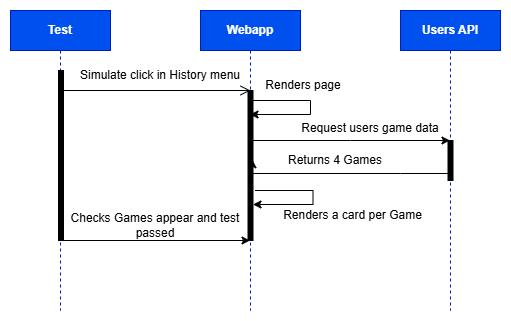
12.3. Load test
Although the app is tested locally, we also have to ensure that it can handle a real world scenario. In this case we tested the performance of the app while 50 users were accessing the system at the same time. By doing so we try to detect bugs or problems under load, detect bottlenecks or demostrate the quality goals specify in the documentations.
12.3.1. Gatling
Gatling is a powerful open-source load testing tool that allows us to simulate a large number of users accessing the system concurrently. We created scenarios that mimic real user behavior, such as logging in. It works as an interceptor between the frontend and the backend, allowing us to measure response times, throughput and error rates under load. The script of the test is written in Scala and it is executed via JVM.
12.3.2. Results
We decided to test the response time to a request to get info from a user and to Firebase login. The test was done with 50 users in 25 seconds.
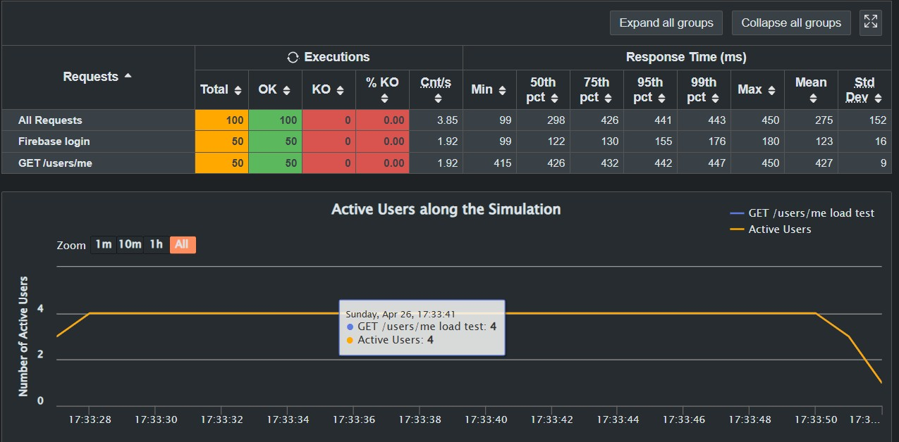
We can conclude the response times are acceptable, with an average response time of 0.427 seconds for the user info request and 0.123 seconds for the Firebase login. The error rates were negligible, indicating that the system can handle the load without significant issues. Some delay was expected, as the system is allocated in India Central region from Azure, and the test was executed from Spain.
We can also analyze the variability in the times for the same request. If we look at the users data request, we can see that the response times are quite consistent, with a low standard deviation. This indicates that the system is performing reliably under load, with minimal fluctuations in response times.
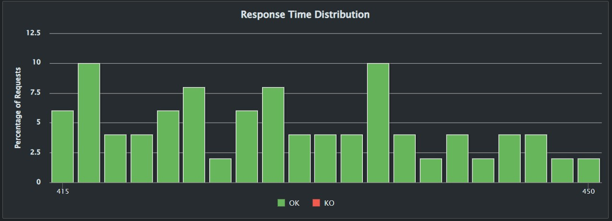
13. Glossary
The most important domain and technical terms that stakeholders should know the meaning.
| Term | Definition |
|---|---|
JSON |
A text-based data format for structuring information using key-value pairs and arrays. Essential for backend-to-frontend communication and integration with the game engine’s API responses. |
API |
A set of standardized protocols and endpoints that enable different software components to exchange data and trigger actions. In Yovi, the API serves as the communication bridge between the user interface, microservices, and the core game logic. |
Bots |
Autonomous software agents programmed to play the game without human intervention. Bots leverage the project’s public API to make moves, evaluate board states, and compete against human players. |
Microservice REST |
An architectural pattern that decomposes the application into modular, independently deployable services communicating via HTTP/REST conventions. Each Yovi service (users, gamey, webapp) operates autonomously while coordinating through REST endpoints. |
Frontend |
The user-facing layer of the application built with React and Vite. Handles game visualization, player input, real-time board updates, and provides an interactive interface for gameplay and user authentication. |
Backend |
A collection of microservices that manage game logic execution, player session lifecycle, move validation, and state persistence. Coordinates between the database, game engine, and frontend to deliver a cohesive user experience. |
Game Engine |
The computational core responsible for enforcing game rules, validating moves, calculating game trees, and determining outcomes. Implemented in Rust for performance and safety, it exposes its functionality through standardized APIs. |
Docker |
Container technology that packages the application with all dependencies into isolated, reproducible environments. Enables seamless deployment across development, testing, and production while maintaining environment consistency. |
Arc42 |
A mature architecture documentation framework that structures technical documentation into 12 logical sections. Provides stakeholders with a comprehensive view of design decisions, system interactions, and technical trade-offs. |
Microservices |
A distributed system design where independent services specialize in specific business capabilities and communicate via well-defined contracts. Yovi adopts this pattern to enable parallel development, independent scaling, and technology diversity (Rust backend, TypeScript frontend). |
GitHub |
A version control and collaboration platform built on Git. Serves as the central repository for source code, issue tracking, pull request reviews, and team coordination throughout the development lifecycle. |
LLM (Large Language Model) |
An AI system trained on vast text datasets capable of understanding context and generating human-like responses. Can assist with code generation, documentation, and architectural decision-making during development. |
PlantUML |
A text-based diagram generation tool that converts structured descriptions into visual representations. Useful for creating sequence diagrams, component diagrams, and architecture visualizations during documentation phases. |
YEN Notation |
A JSON-compatible serialization protocol that captures a complete snapshot of game state including the board configuration, current turn, active players, and game metadata. Facilitates state persistence and inter-service communication. |